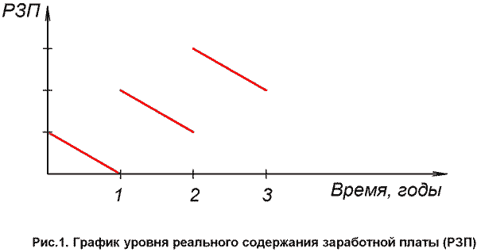

А.В. Золотов,
доктор экономических наук, профессор,
директор Института теории и практики
профсоюзного движения
Фонда Рабочей Академии и Федерации профсоюзов России,
Нижний Новгород
Рост российской экономики, происходящий после кризисного периода 90-х гг., сопровождался повышением уровня реальных среднедушевых доходов населения, увеличением реальной зарплаты. Казалось бы, данное обстоятельство должно было получить однозначно позитивный отклик. Однако некоторые авторы высказывают озабоченность, ссылаясь на то, что рост зарплаты в последние 2-3 года опережает увеличение производительности труда. Проблема соотношения динамики зарплаты и в более широком плане — уровня жизни — с динамикой производительности труда, безусловно, заслуживает специального рассмотрения.
В общетеоретическом плане опережающий рост производительности труда обуславливается необходимостью расширенного общественного воспроизводства. При таком опережении увеличение объема потребления работниками жизненных средств сочетается с ростом масштабов накопления и фондов общественного потребления. В результате осуществляется расширенное воспроизводство производительных сил и производственных отношений. Поэтому отмеченное соотношение закономерно для производства на основе научно-технического прогресса (НТП).
Расширенное воспроизводство производительных сил, разумеется, не исчерпывается обновлением на передовой основе средств производства. В составе производительных сил главным, творческим элементом выступают работники. Их развитие предполагает рациональное потребление жизненных благ, повышение образовательного и квалификационного уровня, укрепление здоровья. Расширенное воспроизводство работников включает и рост численности населения.
Развитие обоих элементов производительных сил находится в единстве. Создание и освоение новой техники представляет творческий процесс, реализацию инновационного потенциала работников. Функционирование же новой техники не только увеличивает массу производимых жизненных средств. Оно способствует оздоровлению условий труда, обогащению его содержания, что выступает объективными предпосылками развития работников. Прогресс техники проявляется и в экономии труда, высвобождении его для деятельности вне сферы непосредственного материального производства, удовлетворяющей многообразные социальные потребности в рамках свободного времени.
В данном единстве ключевая роль принадлежит развитию работников, которые являются субъектами совершенствования производительных сил, превращают его результаты в предпосылки для повышения уровня собственной жизни. Правда, последнее положение в полной мере относится к совокупному работнику, поскольку не всегда развитие совокупного работника осуществляется как развитие каждого индивидуума, входящего в его состав. Вместе с тем в современных условиях все острее проявляется необходимость превращения развития каждого в условие развития всех. Отсюда следует, что рост жизненного уровня работников — это форма проявления развития производительных сил в целом.
С учетом сказанного, очевидно, что опережение роста производительности труда по сравнению с ростом зарплаты предполагает не ущемление интересов работников, а, наоборот, означает формирование предпосылок для удовлетворения всего комплекса предпосылок развития человека, не сводящихся к личному потреблению материальных благ. Данная закономерность — это закономерность развития производительных сил, включая прогресс их основного элемента.
Рост производительности труда и развитие работников не разведены во времени. Отмеченный рост выступает реализацией возросшего творческого потенциала совокупного работника. В соответствии с этим по своей сути не разведены во времени повышение производительности труда и зарплаты. Хотя приобретаемое на зарплату не исчерпывает всех предпосылок для жизни работника, оно является их неотъемлемым элементом. В силу единства сторон личности человека его развитие включает и прогресс потребления. В этом смысле рост производительности труда благодаря повышению инновационного потенциала работника предполагает увеличение реальной зарплаты. Вот почему закономерность опережения было бы неправомерно трактовать как: "Сначала рост производительности труда, а потом — зарплаты". Безусловно, результат — в форме роста производительности труда — не может быть оторван от предпосылки — более полного удовлетворения потребностей работника благодаря повышению реальной зарплаты.
Сказанное необходимо скорректировать с учетом того, что на практике получение зарплаты опосредствуется процессом труда. Зарплату при устойчивых трудовых отношениях получают не каждый день, а после выполнения трудовых функций в течение определенного периода, так что создается предпосылка для "запаздывания" роста зарплаты по отношению к динамике производительности. Но временной лаг, возникающий при этом, не превышает двух недель.
Кроме того, повышение производительности — не одномоментный акт. Оно может потребовать определенного периода, связанного с освоением новой техники, передовой технологии, с повышением квалификации и т.д., когда потенциал роста производительности труда еще только формируется. Соответственно увеличение зарплаты происходит по завершении этого подготовительного периода, со стабильным достижением нового уровня производительности труда, например, по итогам хозяйственного года.
Связь роста производительности труда и повышения оплаты усложняется в том случае, когда производительность растет у одних работников благодаря инновационной деятельности других. Создатели прогрессивной техники могут увеличивать собственные трудозатраты. Но ее применение способно повысить производительность настолько, что в целом затраты общественного труда на выпуск заданного объема продукции сокращаются. В такой ситуации производители прогрессивной техники, безусловно, вправе рассчитывать на дополнительное денежное вознаграждение, но его получение обусловлено реализацией потенциального эффекта у потребителей новых средств производства. Рост зарплаты новаторов откладывается именно потому, что производительность должна возрасти в следующем звене технологической цепочки.
В любом случае творческое и ответственное отношение работников к решению задач повышения производительности труда сопряжено с их расчетом на улучшение собственного социально-экономического положения, в том числе и за счет увеличения зарплаты.
Общественный характер труда привносит специфику в динамику общественной и индивидуальной производительности. Первая, например, может изменяться за счет изменения структуры общественного производства при неизменном уровне индивидуальной производительности. Закономерность опережения, по своей сути, относится к макроуровню экономики. Отсюда возможность ситуации, когда в отдельных хозяйственных звеньях зарплата растет быстрее производительности при том, что в целом по народному хозяйству реализуется обратное соотношение.
Связь повышения производительности труда и роста зарплаты вполне согласуется с тем фактом, что зарплата в условиях товарного хозяйства выступает стоимостью рабочей силы, то есть определяется не реализацией рабочей силы, а стоимостью жизненных средств, необходимых для нормального воспроизводства работника и его семьи. Во-первых, повышение общественной производительности труда движимо и сопровождается ростом общественных потребностей, так что увеличение зарплаты соответствует возвышению потребностей, меняющему объем и структуру жизненно необходимых средств работника и его семьи. Такая ситуация проявляется и на уровне предприятия. Во-вторых, рост производительности может быть обусловлен повышением квалификации, что также повышает стоимость рабочей силы и требует компенсации в виде дополнительного заработка. В-третьих, форма цены рабочей силы способна выполнять стимулирующую функцию. Поэтому закономерность отмеченного опережения вовсе не требует буквального понимания увеличения зарплаты как "платы за более производительный труд".
Из сути закономерности не вытекает, насколько именно темп роста производительности превышает темп роста зарплаты. Данное соотношение определяется различными факторами. Так, коренная реконструкция материальной основы общественного производства может потребовать повышения нормы накопления, что означает относительное понижение темпов увеличения зарплаты. Ухудшение международной обстановки, диктующее необходимость дополнительного укрепления обороноспособности страны, также обычно связано с замедлением роста зарплаты. Но подобные обоснованные изменения не противоречат стратегическим интересам развития работников и не отменяют действия анализируемой закономерности.
Проведенный анализ предполагает наряду с различием и тождество интересов собственников средств производства и наемных работников, абстрагирование от заинтересованности собственников в монополизации результатов роста производительности труда. В действительности же, наличие однонаправленности интересов сторон трудовых отношений, обусловливающей поощрение работников за повышение производительности труда, не исключает и расхождения их интересов.
Присвоение собственником всего стоимостного эффекта от возросшей производительности непосредственно увеличивает его прибыль, что порождает тенденцию к разрыву связи между динамикой производительности и зарплаты. Разумеется, подобная ситуация, выгодная предпринимателям в краткосрочном плане, в перспективе сулит серьезные издержки в виде утраты у работников мотивации в последующих инновациях, трудовых конфликтов и т.д. Однако непосредственная выгода, как показывает опыт, нередко перевешивает стратегические интересы собственников, однонаправленные с требованиями развития производительных сил. Поэтому в разрешении отмеченного противоречия не обойтись без активности работников как стороны, заинтересованной в приведении зарплаты в соответствие с новой стоимостью рабочей силы.
Поскольку процесс согласования интересов не является одномоментным, то опережение ростом производительности труда роста зарплаты становится опережением не только по темпам, но и по времени осуществления. Подобная ситуация, безусловно, типична для современной экономики и свидетельствует о том, что в прогрессе производительных сил проявляются не только позитивные, но и негативные тенденции.
Вышеприведенный анализ абстрагирует от различия между номинальной зарплатой и уровнем реального содержания заработной платы. Между тем динамика уровня реального содержания заработной платы определяется соотношением изменения уровня потребительских цен и размера номинальной зарплаты [1]. Современной капиталистической экономике, завершившей переход от эпохи свободной конкуренции к эпохе государственно регулируемого хозяйства, присуща искусственно создаваемая инфляция, которая ведет к снижению реальной зарплаты. Наблюдается и рост номинальной зарплаты, способствующий повышению реальной. Как же в итоге изменяется реальная зарплата?
Следует учесть, что инфляция — процесс, который протекает практически безостановочно. Можно зафиксировать время возникновения первичного фактора, способствующего раскручиванию инфляции. Например, повышение тарифов на электроэнергию, подталкивающее увеличение общего уровня цен, происходит обычно в начале календарного года. Затем уже процесс инфляции развертывается при участии множества предпринимателей и с точки зрения работника — покупателя товаров может рассматриваться как непрерывный.
Что касается повышения номинальной зарплаты конкретных работников, то оно происходит дискретно, в определенные моменты времени, устанавливаемые, например, для бюджетников решениями органов власти, а для занятых на негосударственных предприятиях — коллективными договорами и соглашениями. Последующие изменения уровня оплаты труда в организациях происходят в лучшем случае через квартал, а обычно — через год.
В силу совпадения моментов пересмотра уровня номинальной зарплаты в организациях в соответствии с общепринятой практикой перезаключения коллективных договоров, которое происходит в начале календарного года, в целом по народному хозяйству средний уровень номинальной зарплаты повышается дискретно, скачками, зачастую под воздействием забастовок или угрозы забастовок работников.
Опираясь на вышеизложенное, можно построить график динамики уровня реального содержания средней по народному хозяйству зарплаты наемных работников, например, за трехлетний период.
Предположим, что повышение средней по народному хозяйству номинальной зарплаты происходит в начале года, тогда как инфляция осуществляется непрерывно и равномерно.
Предположим также, что ежегодно номинальная зарплата возрастает на 20%, а индекс потребительских цен увеличивается на 10% (конкретное значение рассматриваемых величин не принципиально для анализа динамики уровня реального содержания зарплаты).
Тогда, исходя из сформулированных предпосылок, график изменения уровня реального содержания средней по народному хозяйству заработной платы работников будет иметь вид, изображённый на рис.1.
Данный график имеет вид кусочно-непрерывной функции, убывающей в каждой точке. Повышение реальной заработной платы происходит в точках разрыва под влиянием коллективных действий рабочих.
Отсюда следует, что выстраивать тренд уровня реальной зарплаты в виде возрастающей кривой можно, только игнорируя убывающий характер функции. "Неуклонного" возрастания реальной зарплаты в условиях инфляции не может быть в принципе, это возрастание происходит дискретно.
В соответствии с этим закономерность опережающего роста производительности труда получает дальнейшую модификацию. Недостаточно констатировать, что увеличение реальной зарплаты отстает по времени от повышения производительности. В условиях инфляции в рамках периодов стабильности номинальной зарплаты рост производительности сопровождается снижением реальной зарплаты, что противоречит закономерности опережения. Лишь увеличение реальной зарплаты способствует повышению инновационного потенциала работников, тогда как ее падение подрывает его.
Не исключена возможность, что работники, получающие одну и ту же номинальную зарплату, не сразу осознают ухудшение своего положения вследствие роста цен. Но, безусловно, такое осознание наступает, что ведет к изменению трудовой мотивации. В этом отношении инфляция — фактор, снижающий заинтересованность работников в росте производительности труда.
Больше того, если исходить из первоначального соответствия цены рабочей силы и ее стоимости, то уменьшение реальной зарплаты вследствие инфляции означает занижение цены данного товара относительно его стоимости, другими словами, отрицается нормальное воспроизводство работника — субъекта повышения производительности труда.
Несложно предвидеть, что повышение цен и тарифов, обуславливающих снижение реальной зарплаты вопреки повышению производительности труда ведет к возникновению трудовых конфликтов, которые разрешаются благодаря передаче работникам части эффекта от новой производительности, в том числе в форме увеличения зарплаты. Чем больше разрыв во времени между возросшей результативностью труда и "скачком" номинальной зарплаты, тем значительнее потери в реальной заработной плате.
С учетом сказанного выявляется ограниченность индексации номинальной зарплаты. Индексация лишь возвращает реальную зарплату к исходному уровню в рамках определенного периода времени и никак не отражает динамики производительности. Работники, повысившие производительность своего труда, оказываются перед фактом отсутствия роста реальной зарплаты. И если они предполагают зависимость уровня оплаты от производительности, то и в случае индексации они оказываются обманутыми в своих ожиданиях. Самое большее, что, по своей сути, может обеспечить индексация — это поддержание прежнего уровня производительности труда. Поощрение более эффективной работы требует выхода за рамки индексации, увеличения реальной зарплаты.
При измерении роста производительности труда важно учитывать, что данная характеристика относится к деятельности непосредственных производителей материальных благ. В составе совокупного работника как на уровне предприятия, так и на более высоких уровнях наряду с рабочими выделяются управленцы, инженерно-технические работники, специалисты экономических служб, обеспечивающие координацию труда, технологическую подготовку производства и т.п. Их трудовая деятельность, являясь абсолютно необходимой для современного производства, все же не имеет основным и непосредственным результатом вещь, энергию или их (вещи, энергии) перемещение во времени и пространстве. А собственно производительным является труд именно с таким результатом [2]. Деятельность инженерно-технических работников и т.д. способствует повышению результативности труда рабочих, в этом качестве служит фактором ее роста, но не относится к труду, производительность которого измеряется в материальном производстве.
Отсюда следует, что при определении производительности труда произведенный продукт, взятый в натуральном, стоимостном выражении или измеренный по трудоемкости, необходимо соотносить с затратами труда рабочих как непосредственно производительных работников. Если же при расчете производительности учитывать рабочее время или численность остальных категорий занятых в составе совокупного работника, то это приведет к заниженной оценке производительности.
Что касается зарплаты, то для предприятия, работающего в условиях коммерческого расчета, в издержки входит оплата труда и рабочих, и нерабочих, что обусловливает необходимость учета динамики всего фонда оплаты труда при сопоставлении с ростом производительности. Тогда при опережающем росте производительности увеличение зарплаты будет сочетаться со снижением издержек производства и ростом прибыли. Такой подход стимулирует оптимизацию структуры персонала предприятия, позволяет предупреждать избыточную численность работников, основная функция которых — создавать условия для высокопроизводительного труда рабочих.
Улучшение положения работников с ростом производительности труда связано не только с увеличением их зарплаты. Часть инновационного эффекта может быть реализована в форме расширения объема и совершенствования качества социально значимых благ, предоставляемых членам общества независимо от их дохода, бесплатно или по льготным ценам. Речь идет об услугах образования, здравоохранения, об организации отдыха, о предоставлении жилья нуждающимся и т.д.
Данная форма повышения жизненного уровня работников отличается тем, что она, не будучи непосредственно связанной с индивидуальным заработком, способствует удовлетворения потребностей каждого нуждающегося в социально значимом благе. Это соответствует прогрессу общественного характера воспроизводства совокупного работника, в условиях, когда общий результат деятельности тысяч людей зависит от вклада каждого, когда деятельность индивидуума может непосредственно влиять на труд и даже жизнь многих людей. Так, например, здоровье операторов атомной электростанции — не только их личное дело. Соответственно, роль данной составляющей повышения благосостояния работников закономерно возрастает.
Финансирование услуг такого рода в значительной степени осуществляется за счет отчислений, связанных с фондом зарплаты. Они непосредственно не входят в получаемую зарплату, но работникам не безразлично, осуществляются подобные отчисления или нет. Постольку сохраняется стимулирующая роль и у этого элемента жизненного уровня работников. Как правило, взносы в фонды социального страхования пропорциональны собственно заработной плате.
Предоставление социально значимых благ финансируется и за счет налогов из полученной зарплаты. Налоговые поступления увеличиваются с ростом зарплаты, но в целом именно зарплата остается источником удовлетворения потребностей работников.
В общественном масштабе источником финансирования развития совокупного работника может послужить и часть прибыли в форме налоговых поступлений в бюджет. Этот источник при росте производительности, опережающем рост зарплаты, также расширяется.
Отсюда следует, что конкретная величина и формы повышения жизненного уровня работников в единстве с ростом производительности труда могут варьироваться в зависимости от соотношения между ростом зарплаты и взносов в фонды социального страхования, с одной стороны, и уровня налоговых ставок на прибыль, с другой. При одном и том же соотношении темпов роста производительности и зарплаты повышению уровня жизни работников способствует увеличение ставок налога на прибыль.
При этом только в статике рост одной величины достижим за счет абсолютного сокращения другой. В динамике, которая присуща экономической действительности, относительное уменьшение прибыли вполне совместимо с ее абсолютным возрастанием. Этот вывод тем более обоснован, что источником роста прибыли выступает именно развитие работников как главной производительной силы общества.
Рост производительности труда сопряжен не только с увеличением зарплаты. Развитие инновационного потенциала работников достижимо в процессе использования новой техники, улучшающей условия труда, ведущей к обогащению его содержания. Конечно, не всегда техника, способная повысить производительность труда, является более эргономичной, требующей повышения квалификации. Но также не вызывает сомнений, что улучшение качества трудовой жизни предполагает внедрение новых технологий и техники, что именно такое обновление создает предпосылку развития работника в процессе труда. Совершенствование трудовой среды побуждает работника в полной мере использовать возможности инноваций и тем самым повышать производительность труда.
Повышение производительности труда означает сокращение затрат рабочего времени на выпуск одного и того же объема продукции, и в таком качестве — экономию труда. Экономия труда может быть действительной, а может — условной. В первом случае общий объем рабочего времени снижается, во втором — рост производительности выражается в увеличении массы продукта при сохранении прежней продолжительности рабочего времени. Действительная экономия производительного труда образует субстанцию свободного времени общества как времени, свободного от непосредственно взаимодействия субъекта со средствами производства [3].
На первый взгляд, рост свободного времени — лишь следствие повышения производительности труда: сначала надо повысить производительность, а затем увеличится время, непосредственно не связанное с созданием продукта. Между тем диалектика этих процессов сложнее.
Уже отмечалось, что повышение производительности — не одномоментный процесс. Но что делает его таковым? — Необходимость освоения производителями новой техники и технологии. Освоение включает изучение рабочими новых операций и особенностей новой техники, консультации со специалистами и т.д., то есть выполнение функций, которые связаны с технологической подготовкой производства и не являются непосредственно производительными. Разумеется, такая деятельность осуществляется в рамках времени, регламентированного трудовым распорядком. Но регламентация — общее свойство регулирования совместных действий в любой сфере, в том числе отдаленной от материального производства. Сама по себе она не превращает регулируемую деятельность в производительный труд.
Очевидно, что освоение рабочими новых технологий и новой техники означает сокращение времени непосредственно производительного труда для деятельности по формированию новых способностей. Отмеченный факт обнаруживается отчетливее, когда речь идет о реализации существенных новаций, требующих повышения квалификации и даже профессиональной переподготовки рабочих. Все это свидетельствует о том, что увеличение свободного времени работников образует предпосылку повышения производительности труда
Накопленная в общественных масштабах экономия труда, материализованная в развитии системы образования, позволяет готовить работников, восприимчивых к инновациям. Рост свободного времени рабочих, приступающих к внедрению инноваций, осуществим за счет перераспределения в их пользу уже имеющегося свободного времени общества. После реализации инноваций будет достигнуто абсолютное увеличение свободного времени общества, открывающее новые возможности для развития каждого. Прогресс производительности труда опирается на развитие работника в рамках времени, свободного от непосредственно производительного труда.
Нормой для производства, основанного на реализации достижений НТП, является сочетание роста реальной зарплаты работников с сокращением рабочего и увеличением свободного времени работников.
Данное обстоятельство особенно отчетливо обнаруживается в рамках продолжительных периодов. Так, за столетие реальная зарплата в экономически развитых странах возросла многократно, наряду с сокращением рабочей недели с 50-60 часов до 35-40. Очевидно, что в условиях НТП, создающего все более благоприятные предпосылки для экономии общественного труда, теряет смысл зависимость: "Чтобы лучше жить, надо больше работать". Работать более продолжительное время в экономике, основанной на реализации НТП, значит действовать вопреки закономерному росту производительности труда, требующему не "загнанных" работников, а способных к ответственному, творческому труду.
Показательно отношение самих работников к данной проблеме. Так, социологическое исследование, проведенное в ФРГ в 1995 г., показало, что немецкие работники при фактической продолжительности рабочей недели в 38,5 часов хотели бы работать 34 часа, даже при условии пропорционального сокращения заработка [4]. Приведенные данные свидетельствуют и об осознании трудящимися ценности свободного времени, и о настолько высоком уровне зарплаты, что работники считают допустимым ее сокращение на 10% ради уменьшения рабочего и увеличения свободного времени. В действительности, повышение производительности труда делает вполне сочетаемыми рост свободного времени и увеличение зарплаты.
Следует иметь в виду, что закономерность опережения роста производительности по отношению к зарплате — это одно из конкретных проявлений развития современных производительных сил. Такое развитие предполагает и увеличение времени, которым работники свободно располагают. Рост же общего заработка за счет удлинения рабочего времени противоречит данной прогрессивной тенденции.
Безусловно, не следует игнорировать противоречивость социально-экономического прогресса. Зачастую стимулирование труда построено таким образом, чтобы побудить работать сверхурочно. Такое положение особенно характерно для США. Как отмечается в экономической литературе, почти треть американских работников предпочли бы работать больше при условии пропорционального увеличения заработка [5]. Хотя они "были бы счастливы работать меньшее количество часов, но они могут испытывать давление к более продолжительному труду, так как рабочее время — наиболее важный способ просигнализировать, что ты — хороший работник" [6]. С такой мотивацией согласуются данные социологического опроса конца 2007 г.: опрошенные американцы работали дополнительно 4,5 часа в неделю, и это после рабочего дня, составляющего в среднем 9,5 часов [7]. И все же подобная ситуация, противореча закономерности сокращения рабочего времени, не в состоянии отменить ее. Другое дело, что данная закономерность осуществлялась последовательнее в условиях активных действий, организованных американскими профсоюзами. Ослабление профсоюзного движения имело негативные последствия.
Диалектика производительности труда и уровня жизни весьма многогранна и сложна, ее исследование требует учета целого ряда факторов, зачастую действующих разнонаправлено, в том числе в противовес развитию работников как главной производительной силы. Закономерность опережения, предполагающая повышение инновационного потенциала работников, реализуется благодаря действию заинтересованных общественных сил.
В сложности проблемы можно убедиться, обратившись и к ее проявлению в современной российской экономике. Существует точка зрения, что относительно ВВП россияне слишком много зарабатывают и недостаточно много производят. В подтверждение подобного тезиса приводится, казалось бы, весомый аргумент: "…опасно, когда зарплаты растут быстрее производительности. В прошлом году производительность выросла на 7,9 %.., зарплаты увеличиваются вдвое быстрее: 16,2 % — в 2007 г. и 13,3% — в 2006 г." [8].
Для того, чтобы учесть российскую специфику проблемы, необходимо правильно определить точку отсчета в динамике производительности труда и зарплаты. На наш взгляд, было бы недостаточно обоснованным ограничиться сравнением темпов этих величин за последние 3-4 года, как будто нынешняя динамика является продолжением долгосрочной устойчивой тенденции. В действительности, и производительность труда, и средняя зарплата пережили в первую половину 90-х гг. спад, отражавший глубокий кризис российской экономики
Как это принято в экономической теории, для обоснованной оценки текущего уровня экономических величин необходимо их сопоставление с предкризисным уровнем. Безусловно, и производительность труда, и зарплата находились под влиянием общего положения дел в народном хозяйстве, и потому анализ их динамики требует такого же подхода. Следовательно, в качестве исходной точки для исследования их динамики целесообразно выбрать 1991 г.
Отталкиваясь от нее, надо сопоставить изменение производительности труда и изменение реальной зарплаты за весь прошедший период, а не за последние несколько лет. Это и позволит объективно оценить соотношение динамики данных показателей.
Как показывают расчеты, проделанные Н.А. Морозовой, уровень производительности труда 1991 г. был превышен в современной российской экономике в 2005 г. — на 4,7%. Между тем в 2005 г. реальная зарплата оставалась ниже предкризисной на 18,2% [9].
Согласно тем же расчетам, в 2006 г. производительность труда по сравнению с 1991 г. выросла на 11%, зарплата — на 0,9%.
Рост производительности в 2007 г. на 7,9% обеспечил превышение уровня 1991 г. на 19,8%, а рост зарплаты за тот же год на 16,2% — превышение исходного значения на 17,2%.
Таким образом, несмотря на более высокие темпы роста зарплаты в последние годы, в целом за период трансформации российской экономики производительность труда опережала рост зарплаты, закономерность опережения продолжала действовать.
Больше того, сделанный вывод должен быть дополнен с учетом принципиального изменения структуры зарплаты в период перехода к товарному хозяйству. В дореформенный период с помощью зарплаты приобретались, главным образом, предметы личного потребления. Такие социально значимые блага как жилье, образование, медицинские услуги предоставлялись, в основном, помимо сферы товарно-денежного обращения. Поэтому объем этих благ не входил в реальную зарплату.
В процессе переходного периода объем благ, предоставляемых работникам в форме социальных льгот и гарантий, неуклонно снижался. Так, бесплатное получение жилье для большинства работников стало практически невозможным, стоимость данного товара вошла в стоимость рабочей силы. В значительной степени то же самое происходило и происходит с услугами медицины, с получением высшего образования. Соответственно, зарплата как форма стоимости рабочей силы должна теперь обеспечивать приобретение и отмеченных благ.
Для нормального воспроизводства работников, в том числе и в новых поколениях, необходимо соответствие цены рабочей силы ее стоимости. Только при данном условии работники в состоянии обеспечивать устойчивые и высокие темпы роста производительности труда, отражающие развитие самих работников. Поэтому правильно оценить темпы роста зарплаты можно тогда, когда принимается во внимание ее соотношение со стоимостью рабочей силы.
Заслуживает внимания расчет стоимости рабочей силы, осуществленный В.Е. Градусовым и В.А. Ремизовым, которые стремились просуммировать все затраты на воспроизводство работника и членов его семьи (включая троих детей) за время трудовой деятельности докера-механизатора (25 лет), исчисляя эти затраты в расчете на месяц [10].
Проделанные расчеты, на наш взгляд, отражают потребности, ставшие для современного работника общественно нормальными и потому — определяющие формирование стоимости рабочей силы. Нуждается в корректировке предпосылка об одном работающем члене семьи, так как обычной является ситуация занятости обоих супругов. Полученную цифру нецелесообразно делить пополам с учетом того, что трудовой стаж супруги, имеющей троих детей, очевидно, будет на треть меньше. Тогда стоимость рабочей силы докера-механизатора составит приблизительно 125000 руб. Уменьшив эту величину на 15 000 руб. (с учетом более низких цен на жилье в нестоличных городах), можно получить среднюю стоимость рабочей силы квалифицированных рабочих России — 110 000 руб.
Между тем средняя зарплата самих докеров находится на уровне одной трети от стоимости их рабочей силы. Средняя же зарплата российского работника не превышает 15% от указанной величины. Это также требует опережающего роста зарплаты по отношению к производительности!
Очевидно, что с отказом государства от бесплатного предоставления жилья для сохранения прежнего уровня жизни реальная зарплата работников должна была возрасти настолько, чтобы за 10-15 лет, которые прежде уходили на ожидание квартиры, можно было бы заработать на ее покупку. Раз этого не произошло, то падение реальной зарплаты в кризисные годы оказалось существенно большим, чем фиксировалось по соотношению номинальной зарплаты и индекса потребительских цен. Следовательно, рост реальной зарплаты начался с куда более низкого ее уровня, чем кажется при чисто формальном подходе.
Правда, небесспорны и приведенные данные по динамике производительности труда. Так, показатель почасовой выработки, используемый для измерения производительности, в действительности фиксирует не только ее динамику, но и изменение интенсивности труда. Хорошо известно, что рост результативности труда предполагает прогрессивные преобразования производительных сил, тогда как рост интенсивности обусловлен повышением трудовых затрат в единицу времени. Оба процесса могут и сопрягаться во времени, и протекать изолированно, когда, например, выработка возрастает в результате интенсификации труда даже при его падающей производительности. На наш взгляд, рост почасовой выработки в условиях низких темпов обновления основных фондов отражал и интенсификацию труда. Есть сомнения в полноте учета на предприятиях объемов сверхурочных работ. Но и при таких условиях имеющиеся оценки уровня производительности труда куда ближе к истине, чем величины реальной зарплаты. Поэтому не приходится говорить о восстановлении предкризисного соотношения между уровнями производительности и зарплаты. Опережающего роста зарплаты на протяжении нескольких лет было явно недостаточно, чтобы преодолеть образовавшийся между ними разрыв.
Попытки повысить зарплату за счет интенсификации труда и использования сверхурочных работ, осуществляемые зачастую по инициативе самих рабочих, только углубляют этот разрыв. Подобная работа сопряжена с повышенным расходом жизненных сил, не компенсируемым ростом зарплаты, ведет к росту производственного травматизма, противоречит трудовой инициативе, творческому отношению к труду, требуемым для повышения его производительности.
Падение реальной зарплаты означало резкое изменение пропорций в стоимости продукта в пользу прибыли. Формально это могло и не отразиться на величине прибыли, поскольку доходы, по сути относящиеся к прибыли, зачастую выплачиваются в форме зарплаты. Анализируя динамику зарплаты, исследователи отмечают, что "многие российские миллиардеры — как и остальные 6 млн. московских налогоплательщиков — получили большую часть своего дохода именно по этой статье. Это неудивительно — ведь налог на прибыль составляет 24%, что превышает сумму подоходного и единого социального налога для высоких доходов (в силу регрессивности ЕСН). Поэтому и крупным, и мелким предпринимателям выгоднее получать доход от своего бизнеса в форме зарплаты, а не дивидендов" [11]. Следовательно, с одной стороны, приведенные темпы зарплаты завышены, поскольку отражают и рост прибыли, а, с другой стороны, рост прибыли произошел за счет превращения в нее части стоимости необходимого продукта. Если рабочие получают в виде зарплаты 15% от стоимости рабочей силы, значит, 85% этой стоимости превратились в прибыль.
Многократное занижение цены рабочей силы относительно ее стоимости имеет пагубные последствия. Огромное большинство работников не располагают средствами, необходимыми для нормального воспитания троих детей в семье. Это — экономическая причина падения рождаемости до уровня, не обеспечивающего простого воспроизводства населения, а, значит, и — совокупного работника.
Заниженная зарплата привела к перераспределению трудовых ресурсов между отраслями. При одном и том же уровне зарплаты труд вне сферы материального производства обладает рядом весомых преимуществ перед трудом рабочих. Он, как правило, требует меньших усилий, осуществляется в более благоприятных условиях, дает шанс для должностного роста (особенно выпускникам вузов) и соответственно роста зарплаты и т.д. Как следствие, практически иссякает приток молодежи в состав рабочего класса. Задача повышения производительности труда объективно ложится на плечи рабочих предпенсионного и пенсионного возрастов, что в ближайшие 5-10 лет может сделать ее неразрешимой.
Вот почему нет никаких оснований "замораживать" реальную зарплату российских работников по причине якобы чрезмерных темпов ее роста. Следует констатировать прямо противоположное: консервация уровня зарплаты, заниженного относительно объективно возможного при достигнутом уровне производительности и необходимого для нормальной жизни трудящихся, ведет к подрыву воспроизводства российской экономики.
Необходимость существенного повышения жизненного уровня работников формулируется и руководством страны, и представителями цивилизованных предпринимателей, и, что особенно важно, профсоюзными организациями. Так, Федерация профсоюзов России, выдвинула Программу "Задачи коллективных действий", нацеленную на реализацию перспективных требования развития работников как главной производительной силы общества, включая доведение цены рабочей силы до ее стоимости.
Вполне возможно, что по некоторым направлениям роста жизненного уровня более целесообразным окажется удовлетворение потребностей трудящихся (например, в жилье) не за счет повышения зарплаты, а за счет перевода соответствующих благ в разряд бесплатно предоставляемых государством. Так, концентрация средств при помощи налоговой системы у государства резко оздоровит ситуацию на рынке жилья. Появление на стороне спроса вместо миллионов разрозненных покупателей одного крупного позволит заморозить и снизить цены на жилье, сделает менее распространенной ситуацию, когда пустуют непроданные квартиры при наличии нуждающихся в них, будет способствовать расширению масштабов жилищного строительства. При таком подходе доступ к социально значимым благам будет открыт и наемным работникам сферы мелкого и среднего бизнеса (собственники большинства мелких и средних предприятий никогда не смогут повысить зарплату работникам до стоимости рабочей силы без риска разорения, ибо конкурентоспособность подобных предприятий как раз и базируется на заниженной зарплате). Разумеется, государственное финансирование производства социально значимых благ сопряжено с определенными проблемами. Однако в их решении можно опереться на заинтересованное участие трудящихся, организованных в профсоюзы.
Таким образом, рост уровня жизни и производительности труда — это образующие единство формы проявления развития работника. Обеспечение этого развития образует основу прогресса экономики, всех сфер общественной жизни.
1. Более подробно по этому вопросу см. Золотов А.В., Попов М.В. Диалектика динамики уровня реального содержания заработной платы в условиях современного капитализма//Уровень жизни населения регионов России. 2007, № 8-9. С. 102-106.
2. Развернутое обоснование этого представлено в работе: Золотов А.В., Попов М.В. Философия производительного труда: Монография. Н. Новгород: Изд-во ННГУ, 2006. С. 12-42.
3. См.: Золотов А. Общественная производительность труда //Экономист, 2002, № 6. С. 92-96.
4. Bell, Linda A., Freeman Richard B. The incentive for working hard: explaining hours worked differences in the US and Germany// Labour Economics. 2001, № 8. P. 184.
5. См. там же. P. 185.
6. Там же. P. 189.
7. Данные были размещены на сайте http://health.msn.com. 06.03.2008.
8. Стеркин Филипп. Не проесть бы // Ведомости, 2008 г. 4 марта, А 3.
9. См. Морозова Н.А. Производительность труда: теоретические основы и факторы ее роста в современной экономике. Автореферат на соискание уч. ст. канд. эк. наук. Н.Новгород, 2007. С. 13.
10. См. Градусов В.Е., Ремизов В.А. Расчет стоимости рабочей силы докера-механизатора ЗАО "Первый контейнерный терминал" (в ценах по состоянию на 1 августа 2007 года)"//Задачи коллективных действий работников, организованных в профсоюзы//Материалы Международной научно-практической конференции. Нижний Новгород, 26 октября 2007 г. По ред. А.В. Золотова и О.А. Мазура//Невинномысск: Изд-во Невинномысского института экономики, управления и права. 2008. С. 98-100.
11. Гуриев Сергей, Рачинский Андрей. Рио-де- Москва//Ведомости, 15 мая 2006 г. А 4.